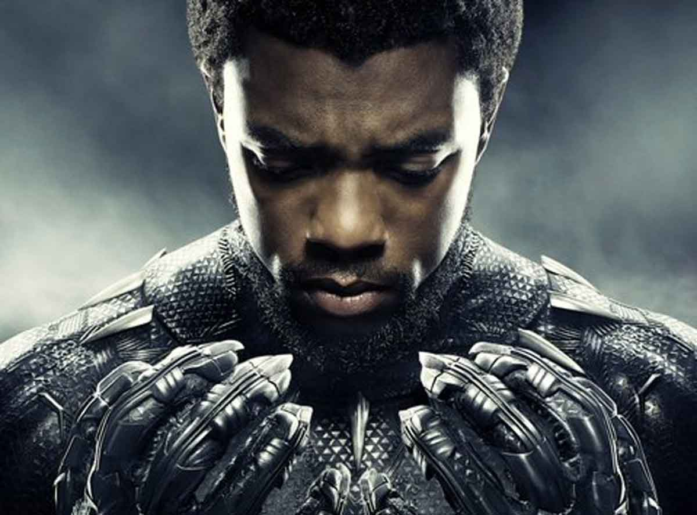
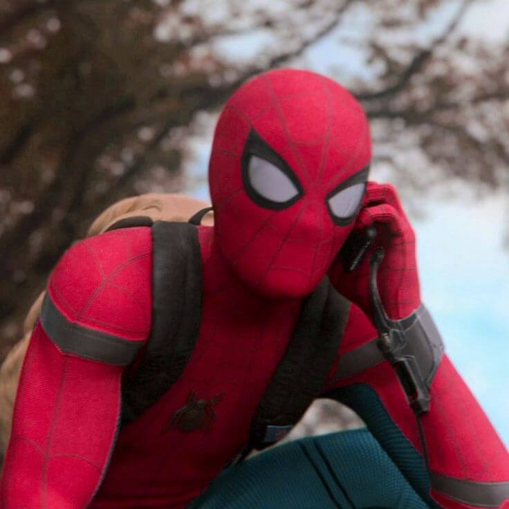
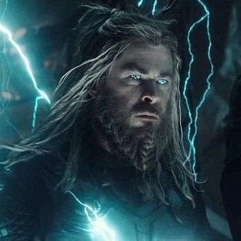
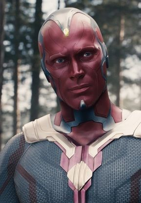
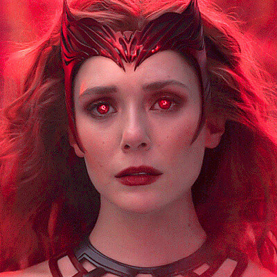
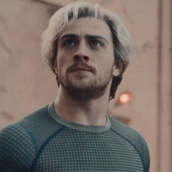
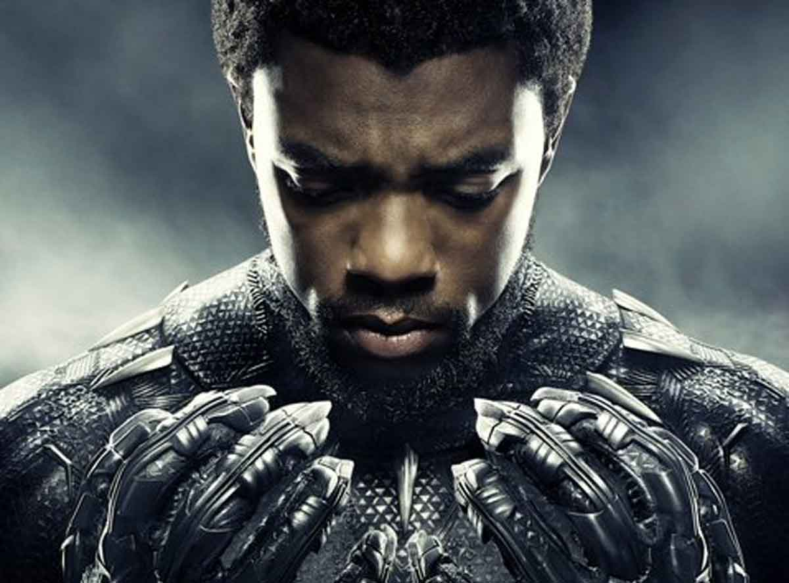
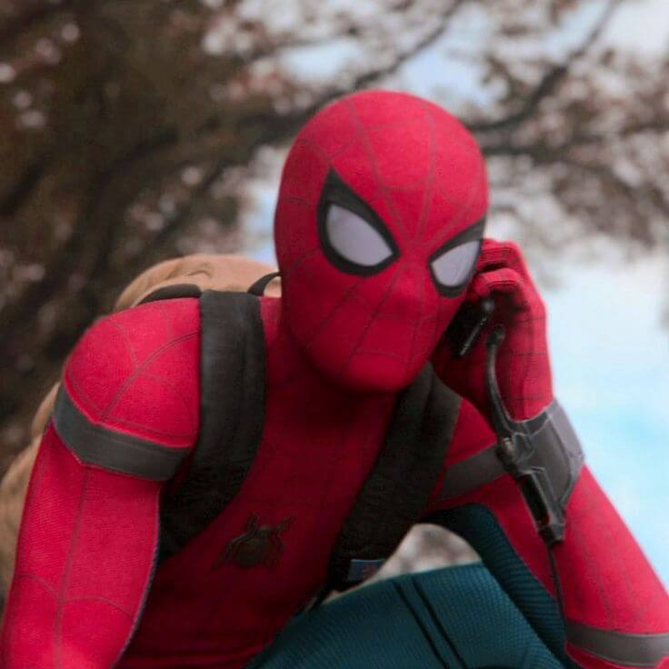
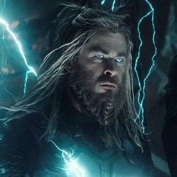
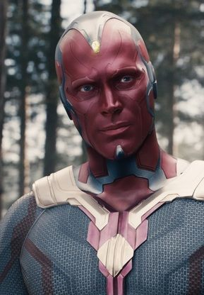
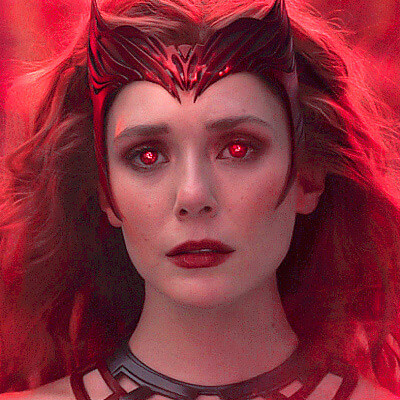
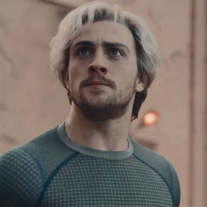
Gavião Arqueiro (nome original em inglês, Hawkeye) alter-ego de Clint Barton, é um personagem de quadrinhos americanos da Marvel Comics. Criado por Stan Lee e Don Heck, o herói fez sua primeira aparição em Tales of Suspense #57 (Setembro de 1964), onde era um vilão ajudando até então vilã, Viúva Negra.
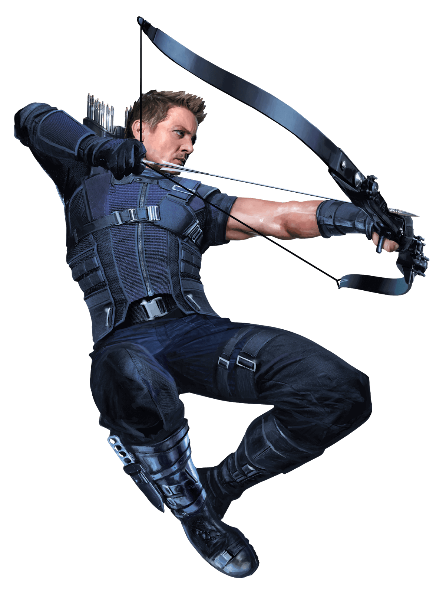Viuva negra
A personagem é interpretada por Scarlett Johansson e sua história é bem parecida com os quadrinhos: ela originalmente era uma agente russa que se tornou vilã, mas quando a conhecemos, ela já é uma espiã a serviço dos EUA e da S.H.I.E.L.D..
Bucky Barners
Barnes foi encontrado pela HYDRA e pela União Soviética, que fez novos experimentos no combatente, dando-lhe habilidades sobre-humanas. Depois de perder a memória de sua vida passada e adquirir um novo braço cibernético, ele se torna um agente da HYDRA conhecido como o Soldado Invernal.
Capitão America
Era 1941 e o criador de histórias em quadrinhos Joe Simon queria colocar um rosto no patriotismo “ianque”: assim criou o “Capitão América”, um jovem do Brooklin transformado em super-herói e que representa “tudo o que faz com que os Estados Unidos sejam o melhor lugar do mundo para se viver”.
Falcão
Apresentado originalmente como um ajudante do Capitão América nos quadrinhos, Sam Wilson alçou voo fazendo sua própria jornada do herói. Originalmente conhecido como o Falcão, ele chegou a assumir o manto de Sentinela da Liberdade, e esse arco finalmente está sendo adaptado para o Universo Cinematográfico da Marvel.
Homem formiga
O primeiro Homem-Formiga dos quadrinhos foi Hank Pym, um cientista brilhante que criou as partículas Pym, substâncias que permitiam alterar as suas moléculas deixando-o grande ou pequeno. Além disso, o herói possuía um capacete que escondia sua identidade e o permitia controlar e se comunicar com insetos.
Vespa
A edição 13 da série revela sua origem como uma socialite abastada que recebeu acesso às partículas Pym, que mudam de tamanho, pelo cientista Henry Pym (aqui um funcionário do pai de Janet, em vez de um super-herói). Seu tamanho máximo é desconhecido, mas ela cresce o suficiente para pegar uma escola.
Hulk
Na história original dos quadrinhos, o Hulk é um selvagem e poderoso alter ego do Dr. Robert Bruce Banner, um cientista que foi atingido por raios gama enquanto salvava um adolescente durante o teste militar de uma bomba por ele desenvolvida.
Homem de ferro
O personagem surgiu em 1963, como resposta a um desafio pessoal de Stan Lee. O roteirista queria desenvolver um personagem que pudesse ser odiado, para, então, ser amado pelo público. O Homem de Ferro fez sua estreia na revista Tales of Suspense #39, da Marvel Comics.
Nick fury
originalmente como um ajudante do Capitão América nos quadrinhos, Sam Wilson alçou voo fazendo sua própria jornada do herói. Originalmente conhecido como o Falcão, ele chegou a assumir o manto de Sentinela da Liberdade, e esse arco finalmente está sendo adaptado para o Universo Cinematográfico da Marvel.
Pantera negra
Segundo a história canônica do herói nos quadrinhos, o Pantera Negra é natural de Wakanda. O país, criado exclusivamente para as hq's, mistura tradições tribais com tecnologias futuristas. Sobretudo, a principal fonte dessa tecnologia é o metal vibranium, também exclusivo da ficção.
Homem aranha
O personagem surgiu em 1962, na revista Amazing Fantasy, da Marvel, e foi criado por um esforço coletivo entre Stan Lee, Jack Kirby e Steve Dikto. Entretanto, Kirby participou somente do desenvolvimento inicial do Aranha, mas nunca foi desenhista regular. Sendo assim, as histórias ficavam a cargo de Lee e Ditko.
Thor
Thor é filho de Odin, o Pai de Todos e rei de Asgard. Ele era adorado pelos humanos conhecidos como vikings e tornou-se parte da mitologia nórdica. Armado com seu martelo Uru encantado Mjolnir, que o ajuda a canalizar suas energias divinas, ele se tornou o guerreiro mais poderoso dos Dez Reinos.
Visao
Visão estreou no filme Vingadores: A Era de Ultron (2015). Neste filme, Visão é criado depois que Tony Stark e Bruce Banner carregam a inteligência artificial J.A.R.V.I.S. em um corpo sintético, que foi criado por Ultron como um upgrade de corpo para si mesmo, movido pela Joia da Mente.
Wanda maximoff
Wanda Maximoff foi sequestrada da Sérvia e trazida para a Montanha Wundagore, base do Alto Evolucionário. Durante anos, ela e seu irmão gêmeo, Pietro, acreditavam que eram filhos do casal de ciganos, Django e Marya Maximoff.
Mercurio
Também conhecido no Brasil como Relâmpago, Homem-Relâmpago e Raio Prateado. Irmão gêmeo de Wanda Maximoff, a Feiticeira Escarlate, Pietro nasceu em Sokovia, junto a seus pais Django Maximoff e Marya Maximoff.